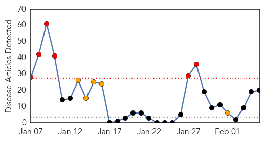
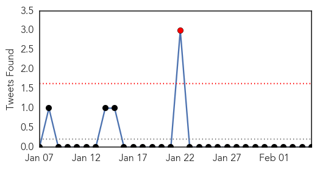
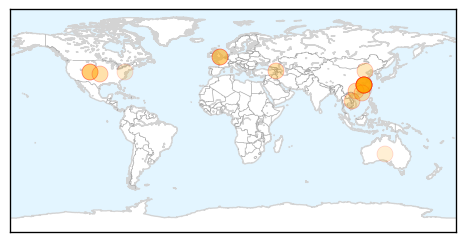
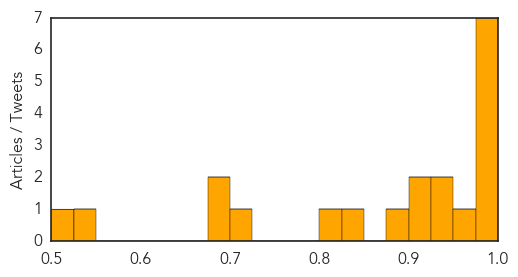

Toggle navigation
Early Warning
Daily Alerts
Influenza
Feb 05, 2014
Compare to:
-
Dengue Fever
Hemmorhagic Fever
Mold/Fungal Infection
Meningitis
Pertussis / Whooping Cough
Middle East Respiratory Syndrome
Cholera
Hepatitis
Chikungunya
Yellow Fever
Bubonic Plague
West Nile Virus
Swine Flu
Ebola
Measles
Unknown
Mumps
30 Day Trends
Web: 6
alerts
, 5
warnings
Twitter: 1
alerts
, 0
warnings
Top Articles:
0.993
New bird flu kills first victim
0.992
China reports first human case of new H10N8 bird flu, and it's fatal
0.987
New strain of 'deadly' bird flu - Panorama
0.987
New strain of 'deadly' bird flu
0.984
New Bird Flu a Reminder of Mutant Virus Risk
0.982
Chinese scientists sound warning over new bird flu virus – BorneoPost Online
0.982
Scientists warn of bird flu virus found in humans for first time
0.972
A New Form of Bird Flu Claims First Human Life
0.938
Bird Flu Virus Crosses Species In China; Found In Humans Too
0.930
Chinese scientists sound warning over new H10N8 bird flu, Others news, Health News, AsiaOne YourHealth
0.924
First human death from H10N8 bird flu reported
0.904
Two new, fatal strains of bird flu have experts on alert
0.887
Chinese Scientists Warn of Potential Pandemic With New H10N8 Bird Flu
0.836
Scientists concerned about new 'deadly' bird flu
0.805
Fears of 'evolving' bird flu strain
0.711
Why Are Vaccination Rates So Low? 30,000 Adults Die Each Year Of Vaccine Preventable Illnesses
0.686
Thousands of Unvaccinated Die from Preventable Diseases Every Year
0.684
95% of adults die annually from vaccine preventable diseases
0.538
Thousands Of Unvaccinated Adults Die Needlessly Every Year
0.505
More warnings to prevent children being given a risky flu vaccine 04/02/2014
Top Tweets:
No tweets found for Feb 05, 2014
Web/News Articles

Tweets

Article Locations

Article Confidences
